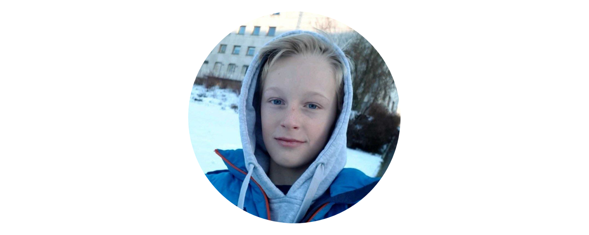
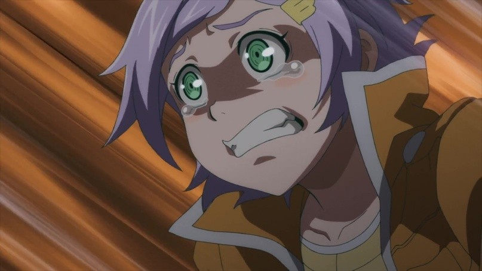

This is the first section.
This is the first section.
This is the first section.
mavantuominen
Привет! Вы попали в мою статью-визитку где собрана вся информация про меня. Мои социальные сети, информация про меня, мои любимые игры, аниме, музыка. Полезные вещи такие как: всё о ботах, приложения и сайты.
⛶ minu menu
Информация
Скиллы
Социальные сети
Мои фотографии
Фото / Друзья / Блоги
Видео / Клипы / Гифы
⛶ navigation
Мир игры ▼
Мир музыки ▼
Аниме ▼
Интернет персонаж ▼
⛶ minu menu
➤ Вконтакте
➤ Дискорд
➤ Телеграм
ВКонтакте, Дискорд и Телеграм сейчас самые популярные социальные сети в которых происходит общение людей. Эти социальные сети обладают своей экосистемой и для их изучения нужно не мало времени. У них есть разные тайны, факты, боты и полезные инструменты, но самое главное это беседы и общения в них.